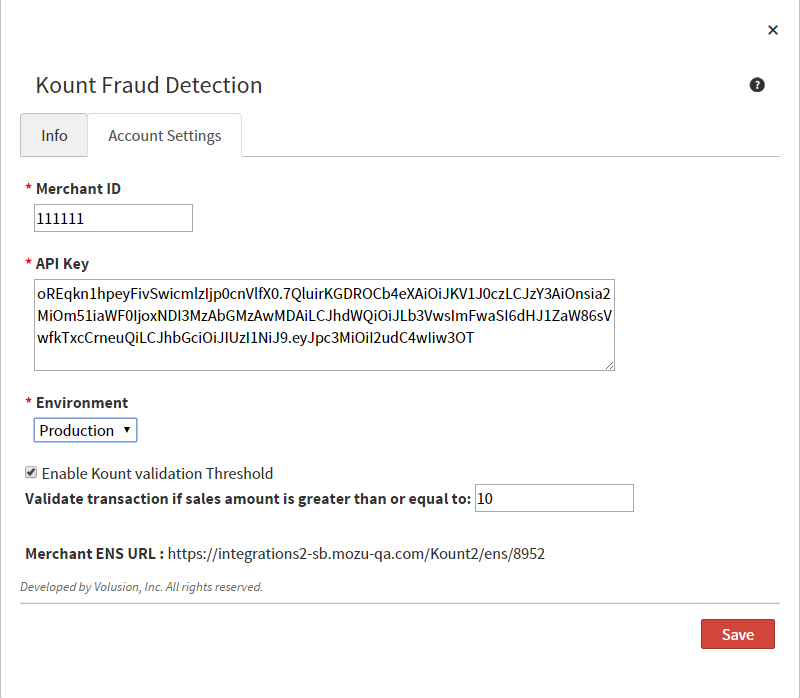

Welcome to Kount and Mozu
Kount provides online services to determine the legitimacy and potential risk of shopper orders submitted through your storefront, specifically at the order level. The service reviews every submitted order for pertinent data including the shopper’s identity, the initial order submitted, the IP and origin location, and the device and browser to calculate a fraud score. Kount compares and assesses the risk of the order’s data and score per the rules you configure to identify legitimate and potentially fraudulent orders.
Mozu offers an app to leverage Kount’s rules and fraud detection to review your shoppers’ orders submitted through your storefront. All orders are determined as accepted, rejected, and failed according to the rules you configure and Kount’s services.
Install Kount Application by Mozu on Your Tenant
After purchasing the Kount Application by Mozu, call your sales or professional services representative and request installation on your tenant. Mozu staff will install the app to your tenant, making it available for further configuration and usage in your storefront.
This custom app integrates Kount with Mozu to support the following:
- Sync your Kount account with Mozu to review orders submitted through your storefront.
- Validate shopper purchases against your Kount rules to determine fraud scores and legitimacy of the purchaser.
- Update the order status as pass/fail/rejected per the calculated fraud score and your Kount rules in Mozu.
- Provide orders to review and manage through Mozu with Kount’s final determination.
When a shopper purchases their order, the following occurs between Mozu and the Kount app:
- Mozu sends collected data to Kount including the browser used, desktop or device used to enter the order, order origin address, the IP of the purchasing system, and additional data as needed.
- Kount verifies the legitimacy of the order against set rules on your Kount account. Kount determines the IP location, validity of the payment method, customer data, browser data, and further items.
- Kount calculates a fraud score for the order and returns the order's status as accepted, failed, or rejected. If rejected, the order data did not clearly calculate as accepted or failed. You can review and actively accept or reject these orders through Mozu.
- Mozu notifies you when purchases have returned as failed or rejected. These orders do require your review and final actions to accept the payment or cancel the order due to potential fraudulent activity through the Orders section.
Configuration Requirements
To configure Kount to work seamlessly with Mozu, you need specific items installed and settings provided. These sections detail each step from requirements to final configuration for reviewing order for legitimacy and fraud potential.
You must meet the following criteria to configure the Kount app:
- You must have the Kount Application by Mozu installed into your tenant.
- You must have an active Kount account and obtain your account ID. This ID may be designated as Volusion (the ID number) when accessing your account.
- You must create and configure your fraud score and purchasing rules in Kount.
- You must have access to modify and update your storefront theme.
Configure the Application
To integrate your Kount services with Mozu, you will modify the app settings using your Kount information and add a widget to your storefront theme. You may need to save information to add to these pages from Kount and within Mozu. Keep a notepad open as needed to help!
Configure Kount Account Settings
- On the Mozu Admin top bar, select Settings>Applications.
- Double-click Kount.
- Click the Configuration link to open configuration settings.
- On the Account Settings tab, enter your Kount account ID.
Note: Need your ID? Click the Kount link on the Info tag and login to the opened page. The ID displays as a number, such as Volusion (12345).
- Click Save. This step connects Mozu to your Kount account.
- Copy the URL provided on the Account Settings tab, for example: https://sample.site.mozu.com/KountExt. This URL directs the Kount widget to send order data to the Kount Web Console (where data collection occurs). Save this link for the next step of configuration.

Configure the Kount Widget
With your Mozu and Kount accounts connected, you need to add and configure a widget to your checkout page in your storefront theme.
- Open Sitebuilder.
- Select Edit for the theme that includes your Kount widget.
- On the Page Editor, expand the Templates folder on the right. Select Checkout.
- Scroll down to the widget zone located at the bottom that holds your Kount widget. Double-click the Kount widget to configure the settings.
- When added, provide the URL saved after configuring the app on Account Settings. This link connects the data collection between Mozu to Kount.
- Click Save to commit your changes.